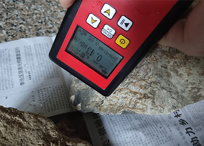
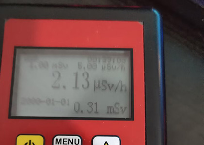
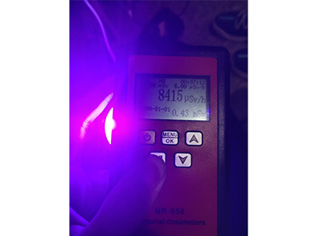
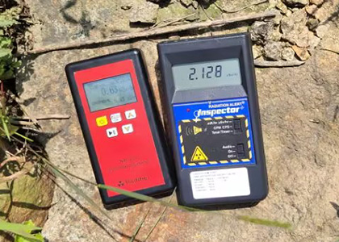

NR750/850/950评测
Author: Xiao Yi | Category: NR750, Geiger Counter
作为我推荐的型号，我觉得还是有必要讲一讲它,同时它也是我买的第一台Geiger Counter
标题这样起是因为NR750/850/950实际上都是一样的，包括内部元件，换个壳子就卖高价，科技以换壳为本。我拆过这台机器但是我忘了。好像采用的M4011盖革管作为传感器，的确，这很入门。
灵敏度方面，对大块的花岗岩也有反应，所以我觉得作为入门器材，它是合格的No Problem
另外我使用的过程也感觉它很"耐造"我好几次不小心把它掉到地板上，它都完好无损，当然我不鼓励任何人去摔仪器，辐射仪都很脆弱。
测量中国的「负离子玻璃吊坠」的数值
但是这台机器有一个说大不大，说小不小的毛病，那就是对一定强度紫外线有强烈的反应，我不知道怎么回事.因为背板外壳是黑色塑料UVA应该无法穿透并到达传感器。
相关内容请查看：电磁辐射与紫外线 -更新自2/5/2023
就像电磁干扰一样，它显示出异常大的数值。他的背板外壳是黑色塑料，按照道理说365nm的紫外线不会穿过它。
最后，与IMI Inspector测量相同的花岗岩数值对比
0 Comments